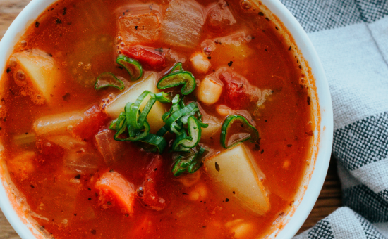
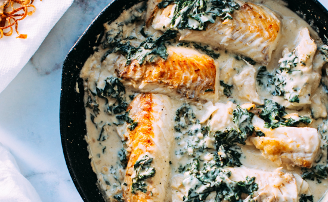
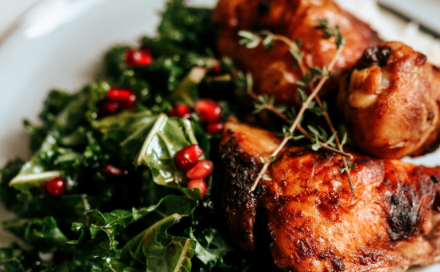
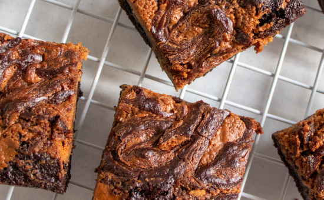
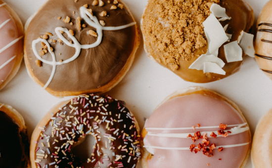
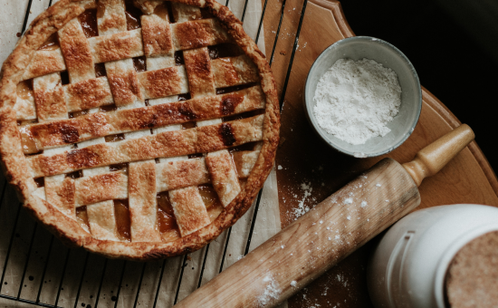
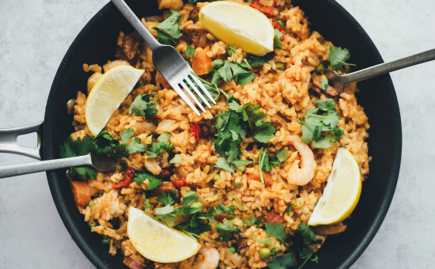
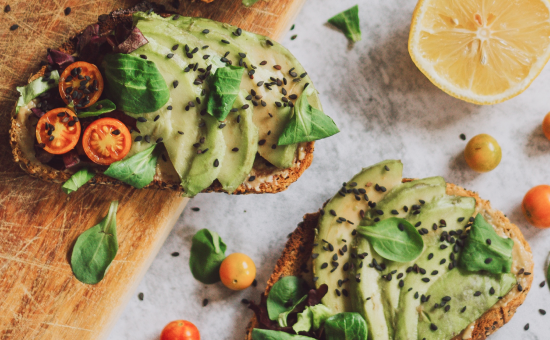
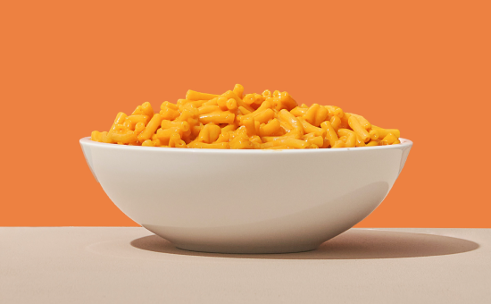

Cozy Dishes for Winter
-

- Asian
- Thai Red Curry
- Forget ordering takeaway and make your own Thai red curry at home. This classic dish takes just 15 minutes to prep and it's bursting with flavour.
-
- 
- Soup
- Minestrone Soup
- Minestrone is a hearty Italian vegetable soup made with tomato-y broth and pasta or rice.
-
- 
- Seafood
- Salmon with Creamy Spinachi
- This pan seared salmon with creamy spinach recipe is so delicious your entire family will fall in love.
-
- 
- Chicken
- Baked Chicken Wings
- Chicken Wings are a game day staple! This baked wings recipe has the most amazing seasoning consisting of paprika, garlic, salt and pepper.
Tasty Desserts Of All Time
-
- 
- Sweets
- Homemade Brownies
- The BEST brownie recipe! With crispy edges, fudgy middles, and rich chocolate flavor, these homemade brownies will disappear in no time.
-
- 
- Sweets
- Frosted Doughnuts
- For doughnut success, follow my step-by-step photos, helpful success tips, and foolproof recipe.
-
- 
- Sweets
- Apple Pie
- This is absolutely the best homemade apple pie you'll ever make! It has a flaky, buttery crust and a tender, lightly-spiced apple pie filling.
-

- Sweets
- Chocolate Chip Cookies
- This is the best chocolate chip cookies recipe ever! No funny ingredients, no chilling time, etc.
Easy Peasy Meals
-
- 
- Asian
- Easy Fried Rice
- Even kids will love this quick and easy fried rice, perfect for a weeknight meal.
-
- 
- Toast
- Avocado Toast
- Creamy avocado spread onto well-toasted bread is one of my favorite quick meals.
-
- 
- Fast Food
- Macaroni and Cheese
- Quick, easy, and tasty macaroni and cheese dish. This baked mac and cheese is a family favorite recipe, loved by both children and adults.
-

- Italian
- Easy Classic Lasagne
- Kids will love to help assemble this easiest ever pasta bake with streaky bacon, beef mince, a crème fraîche sauce and gooey mozzarella